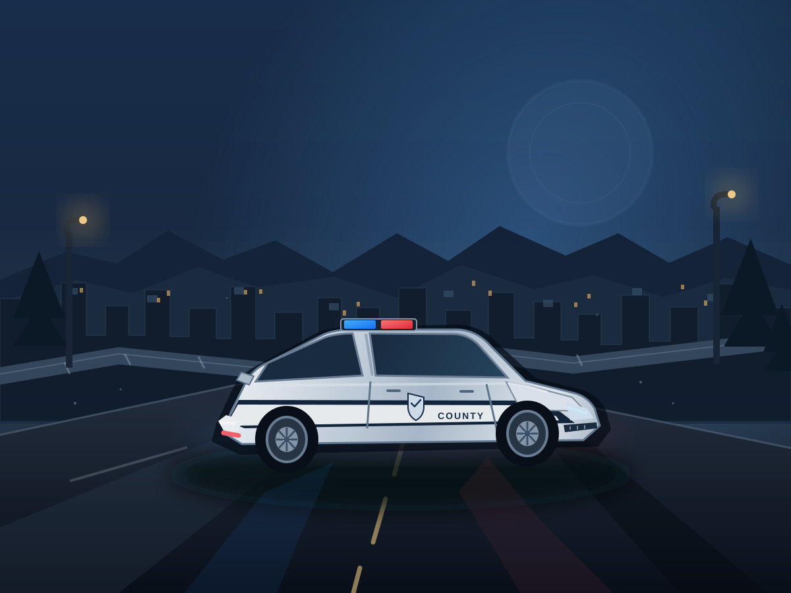

PATH / 01
SERVICE & PROTECTION
Police & Sheriff
Patrol the county, support your team, and help keep the community moving.
YOUR COUNTY. YOUR STORY.
Build your story on the streets, answer the call, or make a life of your own. A community-driven roleplay world is taking shape.

01 / THE EXPERIENCE
Liberty County 2019 is being shaped around the moments that make roleplay memorable: teamwork, unexpected calls, everyday stories, and a town that feels alive.
WELCOME TO THE COUNTY
From busy downtown streets to quiet county roads, your choices help create the story. Step into a role, meet your community, and make every session your own.
Find your place02 / CHOOSE YOUR PATH
Find a role that fits your story. These are the core roleplay paths planned for the experience.
SERVICE & PROTECTION
Patrol the county, support your team, and help keep the community moving.
READY TO RESPOND
Work together, respond to emergencies, and support residents when it matters.
LIFE IN THE COUNTY
Build a routine, explore the town, meet people, and create your own kind of adventure.
i Role availability and gameplay systems may change during development.
03 / THE ROAD AHEAD
Good experiences are built with care. We’re working through the foundations first, then we’ll share more as the project develops.
Follow developmentDefining the look, feel, and roleplay goals for Liberty County 2019.
Developing the environment and the systems that support the experience.
More previews, announcements, and details as milestones are ready.
STAY IN THE LOOP
Follow Thunderstruck Studios for project news, development previews, and community announcements.
04 / QUICK ANSWERS
A few details about the project.
Liberty County 2019 is a roleplay game project presented by Thunderstruck Studios. The experience and features are still being developed, so details may evolve.
A release date has not been announced. Follow the studio’s official channels for confirmed updates.
Use the community links once they have been configured with the official Thunderstruck Studios destinations.
No. This is a fan-created project website for Thunderstruck Studios and Liberty County 2019. It is not affiliated with or endorsed by Roblox Corporation or the creators of Emergency Response: Liberty County.